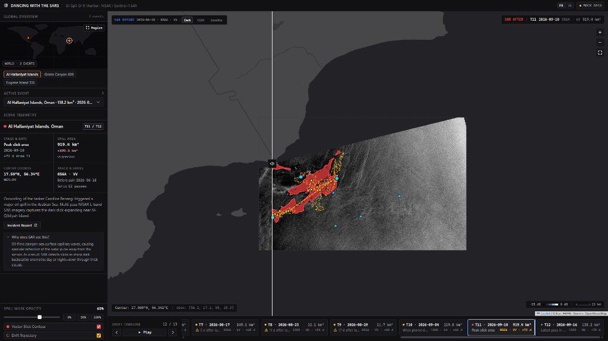
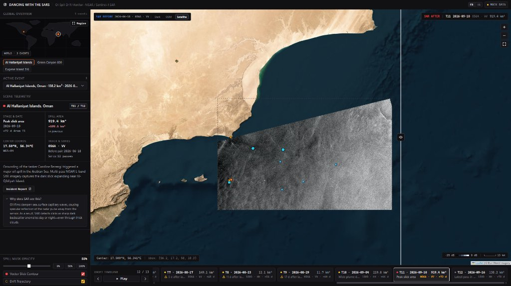
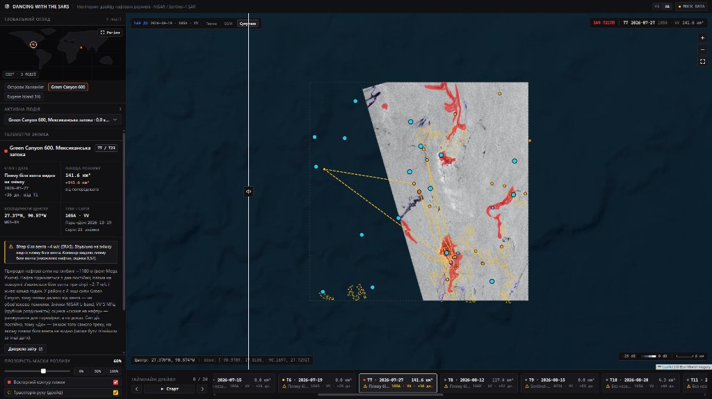

Dancing with the SARs
All-weather, day-and-night marine oil spill detection, drift trajectory tracking, and multi-temporal area analytics powered by NASA-ISRO Synthetic Aperture Radar.
When Oil Spills Strike, Clouds & Darkness Blind Optical Satellites
Cloud-Obscured Oceans
Optical Earth observation cannot penetrate thick cloud cover, smoke plumes, or polar/tropical night—leaving critical early spill hours unobserved.
Heavy Raw SAR Products
Raw HDF5 radar datasets require specialized desktop GIS tools and radiometric calibration before responders can read a single slick boundary.
Missing Drift Context
Static single-frame images fail to show where a spill is moving, how fast its area is changing (Δ km²), or where the pre-event baseline stood.
Instant Browser Intelligence from Calibrated NISAR Imagery
Core Interactive Capabilities
- Basemap ↔ SAR Split Curtain: Drag across any event to compare geographic context against calibrated SAR backscatter and segmented #ef4444 oil masks.
- Multi-Temporal Timeline (T0..Tn): Step or auto-play from pre-event baseline (T0) through consecutive satellite passes (+N days).
- Drift & Area Telemetry: Automated GeoJSON centroids, directional drift arrows, previous-step dashed outlines, and Δ km² readouts.
- Bilingual EN / UA Interface: Instant language switching for both international judges and local responders.

How the Pipeline Finds Oil, and Where It Comes From
L-band radar (24 cm) is scattered back by short wind waves. An oil film damps them, so the slick is dark in γ⁰HH / γ⁰VV, day or night, through clouds, at roughly 3–10 m/s wind. Calm water, rain cells, algal films and island wind shadows damp waves too, so no single feature decides: every dark object is scored on many.
Checked on 9 Known Events (7 Oil + 2 Look-alike Controls)

ARABIAN SEA · OMANTanker Grounding
Caroline Bezengi: the top-ranked source lies 3.6 km from the tanker, found with no position given (28 passes, HH + VV).
Neft Daşları Oil Field
Offshore production on stilts: the #1 source cluster lies 2.5 km from the complex, recurring on 6 dates.

GULF OF MEXICOGreen Canyon 600 Seeps
Natural seeps at ~1180 m depth: source #3 at 4.3 km from the vent; #1–2 are likely neighbouring seeps (51 passes, VV 5 MHz).
2 Look-alike Twins
"Probable" false slicks per 1000 km² per pass: 0.02 over the cyanobacteria bloom, 0.06 in the island wind shadow.
Limits: Wreck 1487 slicks (≤ 6.5 km²) are below 5 MHz resolution · UAE leak in 2–3 m/s calm · Coal Oil Point next to the coast — sources not found there.
Lightweight, Contract-First & Open Source
Frontend Web Application
- React 18 + TypeScript + Vite: Fast, modular UI on a strict v1.2 data contract.
- Leaflet Custom Panes: Synchronized dual-pane clipping for zero-lag split-curtain dragging.
- Static + API Ready: Runs purely on static assets (GitHub Pages) or connects seamlessly to a FastAPI backend.
Data Pipeline & Deployment
- Python SAR Pipeline (processing/): Reads only the area from remote .h5 granules, detects and scores slicks, finds sources and exports sub-megabyte WebP + GeoJSON.
- GitHub Actions CI/CD: Automated build & deployment to GitHub Pages on every push to main.
- MIT Licensed: 100% OSI-compliant open-source codebase ready for community extension.
Faster Response. Cleaner Oceans.
Real-World Impact
Empowers coast guards, environmental agencies, and maritime researchers to inspect SAR-detected slicks, their likely sources and drift in seconds—with zero GIS setup. Chronic leaks can be flagged before they are reported.
Next-Phase Roadmap
L + S dual-frequency NISAR to tell oil from natural films (S-band already obtained for Oman), a thin-plume detector for early leaks, AIS vessel tracks to identify polluters, and drift forecasting.